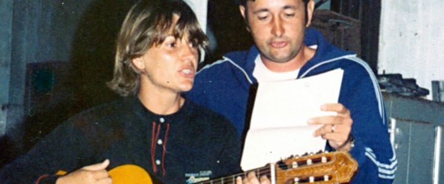
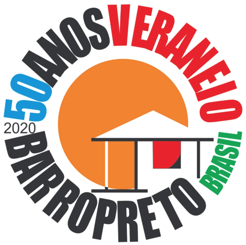
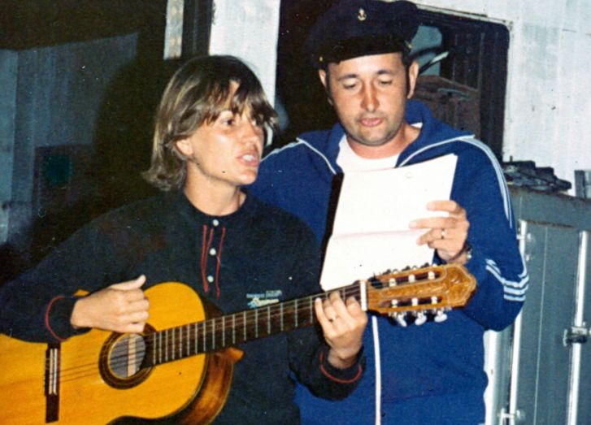
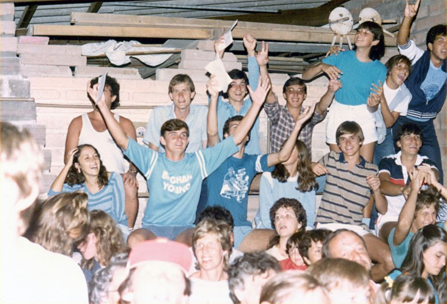
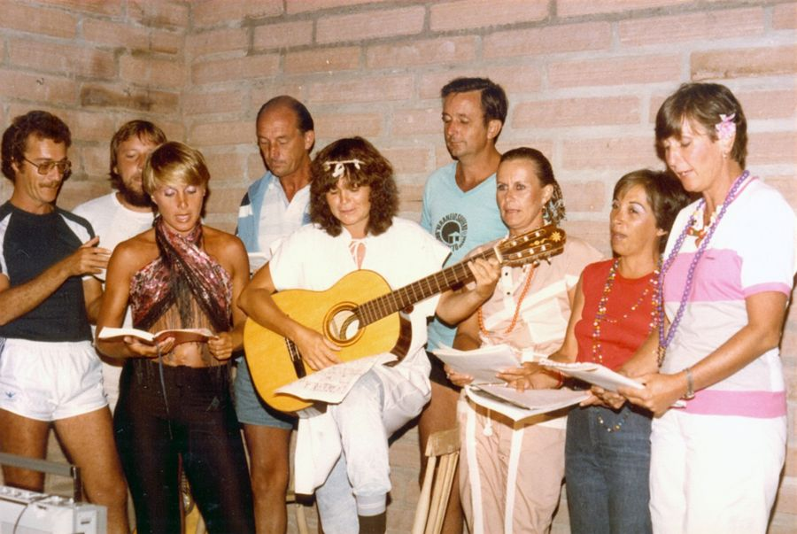
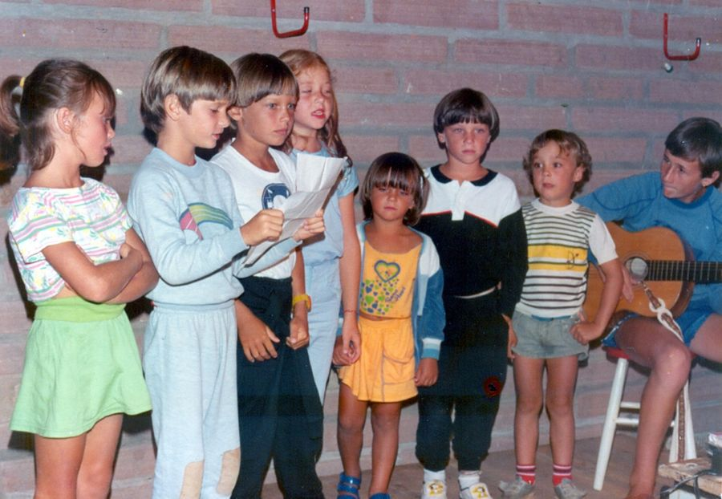

Barrifórnia da Canção Familiar
Desde 1982, a família se reúne para cantar, compor e registrar a história dos veraneios através da música. Este é o arquivo desse festival.
A história do festival

Tudo começou com o veraneio da família em Barro Preto, que reúne parentes de várias gerações a cada verão desde 1970. Em 1982, essas férias ganharam um festival: parte da família resolveu transformar as rodas de violão de fim de tarde em uma competição de músicas com letras adaptadas contando a história dos veraneios em Barro Preto — a Barrifórnia da Canção Familiar.
Este nome foi inspirado no nome de um festival de música nativa gaúcha chamado Califórnia da Canção Nativa que iniciou uma década antes na cidade de Uruguaiana.
De lá para cá foram mais de 40 edições, com centenas de canções, inclusive algumas autorais, com letras compostas, apresentadas e premiadas pela própria família — por grupos como Arriba Véio, Turma da Hora Certa, Luluzinhas, Moranguinhos Silvestres, Micuis, Mandacevas e Quero-Queros. Muitas dessas músicas estavam guardadas apenas em fitas, cadernos e fotografias espalhados entre os parentes. Este site reúne o acervo de mais de 700 músicas catalogadas em um só lugar, para consultar, relembrar e continuar completando o que ainda falta.
Momentos do Barrifórnia



